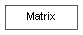

class cymel.core.datatypes.matrix.Matrix¶

-
class
cymel.core.datatypes.matrix.Matrix¶ ベースクラス:
object4x4 マトリックスクラス。
コンストラクタでは以下の値を指定可能。
Matrix- 16値のシーケンス
Methods:
addT(v)平行移動値を加算する。 adjoint()余因子行列を得る。 adjointIt()余因子行列をセットする。 as3x3()3x3部分以外を初期化した行列を得る。 asD([order])asDegreesの別名。asDegrees([order])オイラー角回転を度数法の listとして得る。asE([order])asEulerRotationの別名。asEulerRotation([order])オイラー角回転を得る。 asQ()asQuaternionの別名。asQuaternion()クォータニオンを得る。 asRM()asRotationMatrixの別名。asRotationMatrix()回転のみの行列を得る。 asS()asScalingの別名。asSM()asScalingMatrixの別名。asScaling()スケール成分を得る。 asScalingMatrix()スケーリング成分(scale+shear)のみの行列を得る。 asSh()asShearingの別名。asShearing()せん断成分を得る。 asT()asTranslationの別名。asTM()asTranslationMatrixの別名。asTransformation()トランスフォーメーションとして得る。 asTranslation()平行移動成分を得る。 asTranslationMatrix()平行移動のみの行列を得る。 asTransposed3x3()3x3部分は転置、それ以外の部分は初期化した行列を得る。 asX()asTransformationの別名。axes([transpose])3x3部分の行や列の軸ベクトルを3つ得る。 axis(i[, transpose])3x3部分の行や列を軸ベクトルとして得る。 column(i)列ベクトルを得る。 columns()列ベクトルを4つ全て得る。 det3x3()3x3部分の行列式を得る。 det4x4()行列式を得る。 getelem(row, col)指定位置の要素を得る。 hasNonUniformScaling([tol])非一様スケーリングが含まれているかどうか。 homogenize()3x3部分を正規直交化した行列を得る。 homogenizeIt()3x3部分を正規直交化した行列をセットする。 inverse()逆行列を得る。 invertIt()逆行列をセットする。 isEquivalent(m[, tol])ほぼ同値かどうか。 isSingular()特異行列かどうか。 makeInvS(v[, pre])スケールの逆行列を作成する。 makeInvSh(v)せん断の逆行列を作成する。 makeInvT(v)平行移動の逆行列を作成する。 makeS(v)スケール行列を作成する。 makeSh(v)せん断行列を作成する。 makeT(v)平行移動行列を作成する。 row(i)行ベクトルを得る。 rows()行ベクトルを4つ全て得る。 set(v)他の値をセットする。 setT(v)平行移動値をセットする。 setelem(row, col, val)指定位置の要素をセットする。 subT(v)平行移動値を減算する。 transpose()転置行列を得る。 transposeIt()転置行列をセットする。 Attributes:
-
Identity= _Immutable_Matrix(((1, 0, 0, 0), (0, 1, 0, 0), (0, 0, 1, 0), (0, 0, 0, 1)))¶
-
Tolerance= 1e-10¶
-
Zero= _Immutable_Matrix(((0, 0, 0, 0), (0, 0, 0, 0), (0, 0, 0, 0), (0, 0, 0, 0)))¶
Methods Details:
-
addT(v)¶ 平行移動値を加算する。
パラメータ: v -- 平行移動ベクトル。
-
asDegrees(order=0)¶ オイラー角回転を度数法の
listとして得る。パラメータ: order (int) -- 得たい回転オーダー。 戻り値の型: list注釈
単位を弧度法で得たい場合は
asEulerRotationを使用すると良い。
-
asE(order=0)¶ asEulerRotationの別名。
-
asEulerRotation(order=0)¶ オイラー角回転を得る。
パラメータ: order (int) -- 得たい回転オーダー。 戻り値の型: EulerRotation注釈
EulerRotationの単位は弧度法なので、 度数法で得たい場合はasDegreesを使用すると良い。
-
asQ()¶ asQuaternionの別名。
-
asQuaternion()¶ クォータニオンを得る。
戻り値の型: Quaternion
-
asRM()¶ asRotationMatrixの別名。
-
asSM()¶ asScalingMatrixの別名。
-
asSh()¶ asShearingの別名。
-
asT()¶ asTranslationの別名。
-
asTM()¶ asTranslationMatrixの別名。
-
asTransformation()¶ トランスフォーメーションとして得る。
戻り値の型: Transformation
-
asX()¶ asTransformationの別名。
-
axes(transpose=False)¶ 3x3部分の行や列の軸ベクトルを3つ得る。
各
Vectorの w は 1.0 となる。パラメータ: transpose (bool) -- 転置行列の軸ベクトルを得る。 言い換えると False では行ベクトルを True では列ベクトルを得ることになる。 戻り値の型: tuple
-
getelem(row, col)¶ 指定位置の要素を得る。
パラメータ: 戻り値の型:
-
isEquivalent(m, tol=1e-10)¶ ほぼ同値かどうか。
パラメータ: 戻り値の型:
-
classmethod
makeInvS(v, pre=1e-13)¶ スケールの逆行列を作成する。
パラメータ: - v -- scale値 (x, y, z)
- pre (float) -- ゼロ除算を避ける為の許容誤差。
戻り値の型:
-
setT(v)¶ 平行移動値をセットする。
パラメータ: v -- 平行移動ベクトル。
-
setelem(row, col, val)¶ 指定位置の要素をセットする。
パラメータ:
-
subT(v)¶ 平行移動値を減算する。
パラメータ: v -- 平行移動ベクトル。